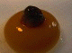
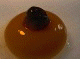

YFCF: Lyrics
 Press release by Anne Honymüss
Press release by Anne Honymüss
All lyrics by Young Farmers Claim Future
All lyrics by Robin Ford alias Asbach 1920, Young Farmers Claim Future
 Birdflock
Birdflock
 Doppler
Goodegg
Doppler
Goodegg
The lyrics used for Claem It were based on The Neckhair Chronicles' text material. Since the lyrics were spoken by the computer, large portions of the original text have been skipped and were replaced by digital sound poems. Some examples of the poems used for Claem It are shown below. There's another example in the 3.152 K SpaceEx QuickTime movie.
Female Literal
This is how it sounds after treatment with the Dopplor software. And here is what it looks like:
a.b.
c.
..ab.
ab.
c.x
b+b. b+c.
..+
.+.
.
ab.x
a.b.
c.
..ab.
ab.c.x
b+b.
b+c.
..+ .+. .
ab.
x x x x x x+x
Male Letters
This is how it sounds after treatment with the Dopplor software. And here is what it looks like:
DoppLer. A
DoppLer. B
.
.
/
A.
B.
//
d(A,p).
d(B,p).
//
S T O P
A p
B p
DoppLer. A
DoppLer. B
.
.
/
A.
B.
//
d(A,p).
d(B,p).
//
S T O P
A p
B p
All this material is property of Young Farmers Claim Future and may only be abused with permission:
Young Farmers Claim Future
Herbert Van de Sompel & Guy c. Jules Van Belle
Herbert.VandeSompel@rug.ac.be & Guy.VanBelle@rug.ac.be
 Claem it
Claem it